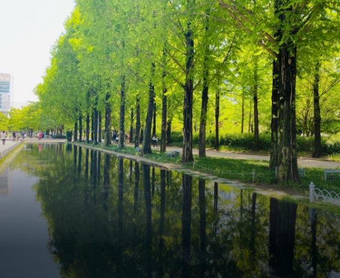

HEALING
HEALING
Seoul offers a variety of parks that provide spaces for relaxation and rejuvenation within the bustling city.
Walking trails and resting areas surrounded by nature offer a peaceful retreat for those weary from daily life. The beautiful scenery, which changes with the seasons, brings new delights to visitors. Various recreational facilities within the parks are perfect for family enjoyment. Seoul's parks are ideal places to experience nature and find healing amidst the urban environment.
Urban Oases in the City
In the heart of the city's natural sanctuaries, standout parks include Yeouido Hangang Park, Olympic Park, and Sky Park. Yeouido Hangang Park offers expansive grassy fields along the Han River, providing a tranquil escape for urban dwellers. Olympic Park, commemorating the Olympics, features vast spaces for activities like picnicking and biking. Similarly, Sky Park boasts breathtaking views of Seoul's skyline from its observation deck and scenic waterfalls, offering an oasis of nature within the urban landscape.
Img Touching
-
- Cherry blossom road
- Yeouido Hangang Park Yeouido Cherry Blossom Road is a famous spot along the Han River known for its beautiful cherry blossoms blooming in spring. " April, the blooming season "
-
- Flower deck
- Olympic Park The Wildflower Terrace is a place in Seoul where various kinds of flowers are planted, allowing visitors to enjoy flowers from spring to fall. " August to October, the blooming season "
-
- Reed Festiva
- Hanuel Park he Eulalia Grass Path at Sky Park offers expansive fields of Eulalia grass, ideal for leisurely urban walks in Seoul. " August to October, the blooming season "
-
- Lonely tree
- Olympic Park A lone tree stands as a captivating sight, especially against the pristine backdrop of winter's serene sky and snow-covered hills. " Spring, Summer, Autumn, Winter "
Other parks in Seoul
Seoul boasts numerous parks, offering residents and visitors a variety of natural experiences. Parks like Seoul Forest, Naksan Park, and Seonyudo Park each have their own unique charm and scenery, providing perfect spots for urban relaxation. These parks are ideal for leisurely walks, exercise, and picnics amidst nature.
-
- Seoul Forest
- 
-
- Naksan Park
-
- Seonyudo Park
-
- Namsan Park
-
- Gyeongui Line Forest Park
-
- Seokchon Lake
-
- Children's Grand Park
-
- Yongsan Family Park